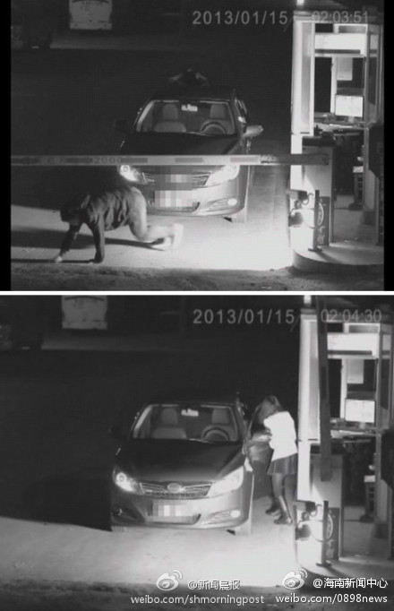
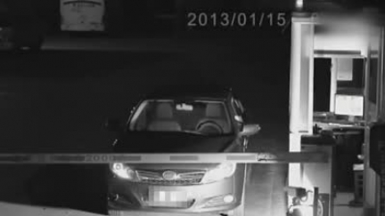

让BYD给利用了吧 你们。。哇哈哈哈@2327286642_691:【女子为逃费深夜扮鬼吓跑收费员】凌晨时分，一辆车开到收费处，收费员发现驾驶室空无一人，此时一名披头散发的女子缓缓爬上车顶，收费员吓得拔腿就跑。随后女子迅速从车顶下来，溜进岗亭收起横杆开走了车。据报道，有网友称事发在国内某景区停车场，因停车费太高才有了这出闹剧。视频：实拍女子为逃费深夜扮鬼爬车吓跑收费员  4万次播放 01:43
 视频：实拍女子为逃费深夜扮鬼爬车吓跑收费员
视频：实拍女子为逃费深夜扮鬼爬车吓跑收费员